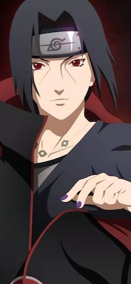

This is an introduction of Itachi

This character is from the anime 'Naruto'
This character is a villain, but is revealed to be a positive character only later in the anime, sacrificing himself without hesitation to protect the village.
- He is supportive to his brother.
- He is kind to everyone around him though he is strong and in manga he could hurt anyone.
- He is loyal to his hometown and the place he originally born.